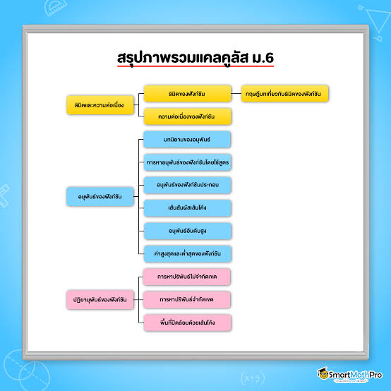

ความหมายและพื้นฐานของแคลคูลัส

แคลคูลัส (Calculus) คือสาขาหนึ่งของคณิตศาสตร์ที่ใช้ศึกษา การเปลี่ยนแปลง และ การสะสม โดยมีแนวคิดสำคัญ 2 ส่วน คือ แคลคูลัสเชิงอนุพันธ์ (Differential Calculus) — ศึกษาอัตราการเปลี่ยนแปลง เช่น ความเร็ว ความชัน แคลคูลัสเชิงปริพันธ์ (Integral Calculus) — ศึกษาการสะสม เช่น พื้นที่ ปริมาตร และระยะทาง